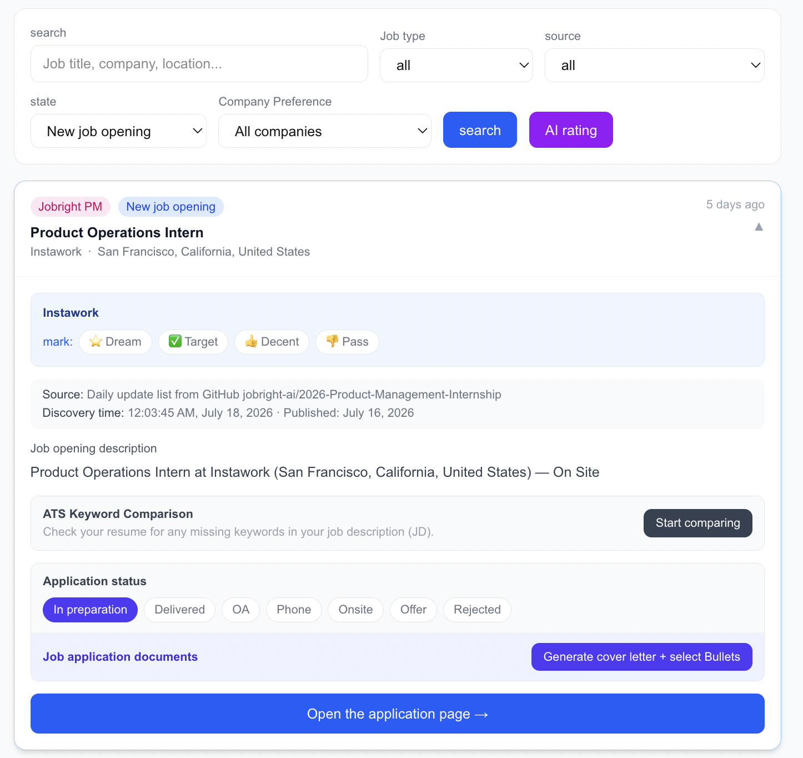

TypeScript · Next.js · AI · Personal Project
Job Agent
A self-hosted system that ingests job listings from seven sources, filters them through a cost-aware pipeline, and scores each survivor with an LLM against a structured candidate profile.
Overview
What is Job Agent?
Every six hours, Job Agent pulls listings from seven sources, filters them down, and scores each survivor against my resume.
The result is a ranked board I check each morning, with per-job ATS keyword gap analysis, cover letter drafts, and a stage tracker from "prepared" to offer or rejection. One command to run; data stays local in SQLite.

One job card: tier tag, ATS gap analysis, application stage tracker, and a one-click cover letter generator, all keyed to the same job ID.
Problem
The Recruiting Problem This Solves
Volume and noise
PM and Data internship listings are spread across Greenhouse, Lever, Workday, LinkedIn, Handshake, and curated lists. Checking all of them manually every day is unsustainable at scale.
Eligibility rules
Many listings carry hard eligibility constraints that disqualify a candidate before any skill assessment. Reading every job description to catch these doesn't scale, so the system encodes them as rule-based filters that run before any AI call.
Relevance signal
Not all PM/Data intern roles are the same. A role at a defense contractor or a senior-level "intern" title aren't what I'm looking for.
Application consistency
Writing cover letters quickly leads to generic content or, worse, hallucinated experience. There's no system to ensure every document is grounded in what's actually on the resume.
Architecture
System Data Flow
Three filter stages run in order before a job reaches the dashboard. Each stage is progressively more expensive. The free regex layers eliminate most noise so the AI only scores what's genuinely relevant.
LLM Scoring Design
How Jobs Get Scored
Each job that survives the filter pipeline is scored by Gemini 2.0 Flash, given the job description, the candidate's resume skill tags, and industry preference weights from the config file.
overall
0–100 match score. Eligibility carries the highest weight — a role the candidate can't be considered for scores near zero regardless of skill fit.
skillsFit
How well the candidate's resume skill tags overlap with what the JD requires.
seniorityFit
100 = designed for interns, 0 = requires senior experience. Catches roles labeled "intern" but scoped for 3+ years.
eligibilitySignal
likely_yes / likely_no / unclear, inferred from eligibility language in the JD.
pros / cons
Plain-language reasons for and against the match, surfaced in the job card for quick triage.
missingSkills
Skills the JD requires that aren't in the resume bullet pool. Used to identify gaps before applying.
Key Product Decisions
Three Design Choices Worth Explaining
Free regex layers before any AI call
Each sync can return hundreds of raw listings: mostly SWE, sales, or full-time roles. Sending everything to an LLM would exhaust quota immediately. Two free stages run first:
Stage 0 — Title Filter
Runs at ingestion. Blocks SWE, sales, recruiter, and unpaid roles. Requires an internship indicator and a PM / DA / BA / Strategy pattern.
Stage 1 — Hard Filter
Checks rule-based eligibility patterns, preferred locations, and companies already applied to. Failed jobs are marked filtered_out with a stored reason.
Stage 2 — LLM Scoring
Only surviving jobs get scored. Together the free layers eliminate ~90% of raw listings before a single AI call.
Verification pass to prevent hallucination
Any generated draft goes through a second verification pass. Every claim is checked against the source resume bullet pool. Sentences that can't be traced back to a real bullet are automatically removed, with the count flagged in the UI.
No auto-apply — system prepares to 100%, user clicks Apply
The system generates a cover letter, surfaces resume bullets to highlight, runs ATS keyword gap analysis, and pre-fills form answers. It does not submit anything.
The boundary is enforced in the data model: Application.stage is only updated manually through the UI. The apply URL is surfaced as a button the user clicks themselves. The value is in preparation quality, not in removing the human decision.
Stack & Methods
Tools Used
- TypeScript
- Next.js 16 App Router
- SQLite + Prisma 5
- Gemini 2.0 Flash
- node-cron
- Tailwind CSS
- IMAP / nodemailer
- Resend (email)
- unpdf (PDF parsing)
- Greenhouse API
- Lever API
- Ashby API
- Workday
Next